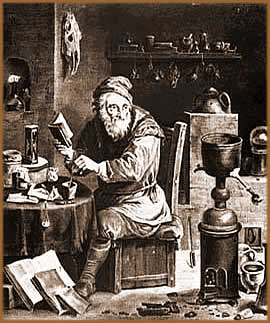
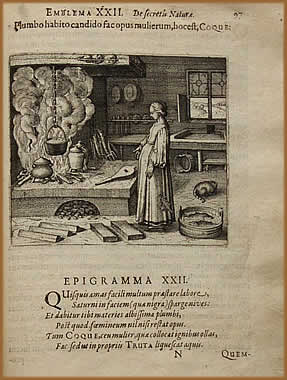

O significado da Alquimia pode assumir
diversas conotações de acordo com o contexto em
que é aplicada e da forma como é interpretada. A
alquimia pode ser considerada uma modalidade de ciência,
talvez a mais antiga da história da humanidade, que originou
diversas outras, inclusive a química contemporânea.
Porém, não é possível classificá-la
apenas como uma ciência. Isto porque, na alquimia, inclui-se
diversos elementos místicos, filosóficos e metafóricos;
além de uma linguagem simbólica e interpretativa.
Assim, podemos classificá-la genericamente como uma antiga
tradição que combina química, física,
arte e ocultismo.
Por
esse motivo, a alquimia também é classificada como
uma ciência ou arte hermética. Neste caso, hermético
é uma alusão direta ao lendário Hermes Tris-
megistus e significa de difícil acesso e compreensão,
reservado apenas para os Iniciados nas artes ocultas.
Esta camada de incertezas relaciona-se também
quando se discute a origem da palavra. Alquimia pode ser originada
no vocábulo árabe kimia, que por sua vez,
deriva-se da palavra egípcia keme, que significa
terra negra e era uma das formas usadas para referir-se ao Egito,
país onde provavelmente surgiu a alquimia. Ainda, pode-se
considerar que a palavra tenha surgido da expressão árabe
al khen que tem raiz grega na palavra elkimya
e significa o país negro. Também cogita-se uma origem
direta no grego, na palavra chyma que se relaciona à
fundição de metais.
Os preceitos da alquimia se encontram condensados
na misteriosa Tábua Esmeralda. A esmeralda era
considerada a pedra preciosa mais bela e com uma simbologia maior.
Uma das características principais dos tratados
alquímicos é a linguagem complexa e rebuscada na
qual são redigidos. Durante a Idade Média, isto
poderia ser um recurso usado pelos alquimistas para que não
fossem alvo da perseguição da Santa
Inquisição. Porém, também é
possível que os autores tentassem ocultar as fórmulas,
de modo que apenas outros alquimistas compreendessem.
Símbolos
e objetivos
Na linguagem alquímica encontra-se associação
de símbolos astrológicos com metais. O Sol, por
exemplo, é associado ao ouro; a Lua representa a prata;
Marte associa-se ao ferro enquanto Saturno ao chumbo. Animais
(mesmo mitológicos como o dragão) e suas características
também são usados para definir os elementos e as
substâncias e os processos ao qual são submetidos.
O unicórnio ou o veado é usado para representar
o elemento terra; o peixe representa a água; pássaros
fazem referência ao ar e salamandras aludem ao fogo. Ainda,
o sal é normalmente representado por um leão verde.
A fase de putrefação do processo alquímico
é representada por um corvo.
Esta simbologia alquímica é encontrada
até mesmo mesclada com ícones do cristianismo medieval.
Por exemplo, nas seculares catedrais góticas, há
uma imensa combinação de imagens cristãs
com animais, símbolos químicos e zodiacais.
De forma geral, pode-se definir três objetivos
básicos da alquimia. O primeiro e, conseqüente- mente,
mais importante é produzir a chamada Pedra Filosofal
(ou mercúrio dos filósofos, entre outros
diversos nomes) que seria uma substância obtida a partir
de matéria-prima grosseira. Através da Pedra Filosofal
seria possível atingir os outros objetivos, que seria a
transmutação da matéria (metais inferiores
transformados em ouro) e produzir o Elixir da longa vida,
uma espécie de medicamento universal que tornaria a pessoa
que fizesse uso, imune a qualquer doença. Os sábios
alquimistas ocidentais afirmavam que a obtenção
de ouro foi um fracasso pela falta de concen- tração
e preparação espirituais dos que realizavam as experiências.
Ainda, entre os alquimistas, há uma idéia
de criar vida humana de modo artificial. O homúnculo
(do latim, homunculus, pequeno homem) seria
uma criatura de aproximadamente 12 polegadas de altura que poderia
ser criada através de sêmen humano colocado em uma
retorta totalmente fechada e aquecida em esterco de cavalo durante
40 dias. Assim se formaria um embrião. Possivelmente, Paracelso
foi o primeiro alquimista a divulgar este conceito.
Porém, é provável que a verdadeira
intenção dos alquimistas era promover uma profunda
mutação na alma e na natureza humana. Este objetivo
fica camuflado sobre fórmulas químicas e simbologias
complexas.
A alquimia na
história
Na China, a prática da alquimia estaria
associada ao Taoísmo, que é o ensinamento filosófico-religioso
chinês. Além da associação à
filosofia védica, na Índia, por volta do ano 1000
a.C., que apresenta semelhanças com alguns fundamentos
alquímicos. No Egito antigo, era considerada obra do deus
Thoth (divindade associada à Hermes Trismegistus. Ainda
no Egito, na cidade de Alexandria, a alquimia recebeu influência
da filosofia neoplatônica, que se baseia no conceito de
que a matéria, apesar de múltiplas aparências,
é formada por uma substância única. Esta seria
a justificativa para a transmutação almejada pelos
alquimistas através da fusão dos quatro elementos
fundamentais da Antigüidade: fogo, ar, água e terra.
De qualquer forma, a alquimia floresceu realmente
a partir de meados do século VII, quando os povos árabes
invadiram o Egito. Assim, o acervo de escritos alquímicos
foram traduzidos para os idiomas árabes e sírio.
Aproximadamente 300 anos depois, em meados do século X,
os mulçumanos introduziram a alquimia no continente europeu,
mais precisamente, através da península ibérica,
na Espanha.
No
século XIII, o conceito de quatro elementos primitivos
e geradores da natureza (água, fogo, terra e ar), foi substituído
pela idéia de que havia apenas três elementos básicos:
mercúrio, enxofre e sal. O alquimista árabe Abu
Musa Jabir ibn Hayyan al Sufi (conhecido como Geber) concluiu
que os metais eram gerados no interior da Terra e compostos de
mercúrio e enxofre. Acreditava-se que ouro e prata eram
compostos de mercúrio e enxofre em sua forma pura. Enquanto
os outros metais eram formados com enxofre impuro. Dessa forma,
concluiu-se que, se através de um processo adequado, fosse
possível "purificar" o enxofre, este poderia
facilmente ser transmutado em ouro.
No ano de 1525, surgiu uma espécie de "escola
de químicos" fundada por Paracelso.
A Iatroquímicos (iatros, do grego, médico)
tinha como objetivo principal encontrar um meio de que a humanidade
se tornasse totalmente imune às doenças naturais.
Porém esta causa poderia também ocultar a intenção
de encontrar o chamado Elixir da longa vida. Foi também
entre Paracelso e os iatroquímicos que surgiu o conceito
de quintessência, que neste caso, seria equivalente
ao "elemento divino".
Entre os alquimistas mais célebres da história,
destacam-se Tomás de Aquino, Paracelso, Nostradamus, Nicolas
Flamel e Francis Bacon. Além do lendário Conde
de Saint Germain, que teria encontrado a Pedra Filosofal e
o Elixir da longa vida.
A alquimia medieval é a responsável
pelas bases da química moderna. Além disso, os alquimistas
contribuíram imensamente com a medicina contemporânea
e deixaram como legado de alguns procedimentos que são
utilizados até hoje, como o "banho-maria" (em
alusão à alquimista conhecida como Maria, a
Judia). Porém, a maior influência da alquimia
encontra-se nas ciências ocultas ocidentais agindo diretamente
na sabedoria e natureza humana.
Por
Spectrum
Agradecimentos
à Kimberlly Almeida